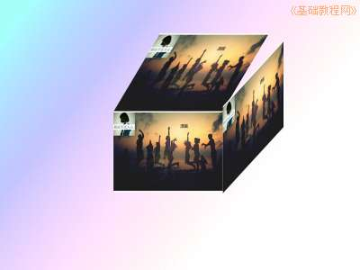

2012-2013 第二学期八年级图像处理教学设计
作者：TeliuTe 来源：基础教程网
十、学会缩放和拼图 返回目录 下一课
（一）教学设计
1、学习目标：学会缩放和拼图
2、注意事项：绕过弯来，既不要跳也不要落，一楼过了二楼
3、教学过程：
1）教师准备学案和板书；
2）学生整队进入，开机抄黑板上笔记；
3）教师讲解板书演示操作；
4）学生打指法、日志、完成操作；
5）教师打勾记录学生指法成绩，检查日志和操作；
注：学生抄完笔记就开始打指法、日志，老师讲完后再继续完成；
（二）板书设计(学生笔记)
第10课 学会缩放和拼图
1、用三幅图拼一个立方体
2、文件，新建800×600,渐变背景
3、复制图像，编辑，粘贴为新图层
4、用缩放工具，切变工具
5、用移动工具对齐
====
--操作指南--
1、工具平时切换到选择
2、学会分步调整，按顺序
操作图示：

（三）课后记 2013-04-08 12:55
--
第三幅缩放的时候，高度跟第一幅一样，宽度跟第二幅一样
第二幅的角度30～45度，还要超过45度,第三幅切变的方向是向上拉，别弄错了
--
想着有点难，做起来还可以，拼的不是很好看
下节还要做一次，这回是打个基础
--
学习还是有些着急，总想着快快学完
做的过程中克服困难最终做出一个，前面看不出来最后恍然大悟
--
强调一步一步，指法是为日志服务
日志是为了后面操作打基础，一楼二楼往上上
--
范例不够用，每次都在为做什么例子费脑筋
太难的做不出，太简单没意思
--
既要有新的知识点，还要复习前面学过的内容
用简单的手法做出一个比较漂亮的效果出来
--
标尺栏上有个游标指针可以显示当前鼠标的位置
用它可以大致确定图像缩放到的位置
--
选图片的时候，选花一点的，有明暗层次感的
先对齐一边，然后再缩放另一边
--
忘记改时间了，服务器到时间自动关机，提示无法找到服务器
过去一看才想起来，设的每天自动关机，一会改一下
返回目录 下一课
本教程由86团学校TeliuTe制作|著作权所有
基础教程网：http://teliute.org/
美丽的校园……
转载和引用本站内容，请保留作者和本站链接。